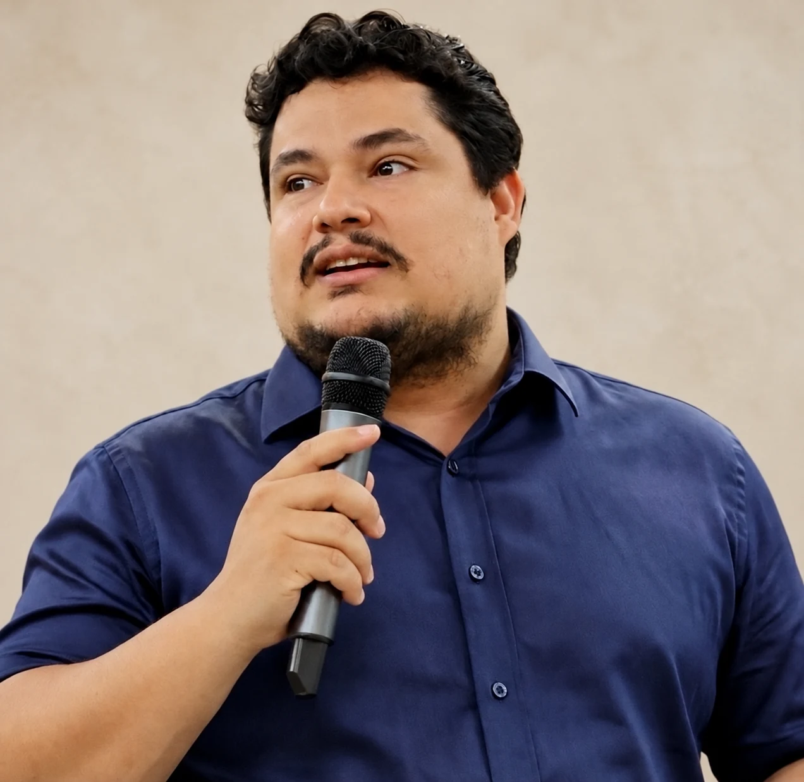

Celso H. L.
Silva-Junior.
Entender as florestas.
Cuidar do futuro.
Sensoriamento remoto, carbono florestal e dinâmica do fogo. Pesquisa para compreender as mudanças nos ecossistemas tropicais.


Celso H. L. Silva-Junior · IPAM / UFMAUma perspectiva
sobre as florestas.
Engenheiro ambiental, doutor em Sensoriamento Remoto pelo Instituto Nacional de Pesquisas Espaciais (INPE) e pós-doutor pela University of California, Los Angeles (UCLA), com atuação como pesquisador afiliado no Laboratório de Propulsão a Jato da NASA (JPL/NASA). Pesquisador do Instituto de Pesquisa Ambiental da Amazônia (IPAM), professor permanente do Programa de Pós-Graduação em Biodiversidade e Conservação (PPGBC) da Universidade Federal do Maranhão (UFMA), Bolsista de Produtividade em Pesquisa do CNPq Nível C e Membro Afiliado da Academia Brasileira de Ciências (ABC). Pesquisa focada na quantificação espaçotemporal de emissões e remoções de CO₂ pelas florestas brasileiras, com ênfase em dinâmica do fogo, fragmentação florestal e restauração ecológica.
Currículo Lattes ↗Google Scholar
Seis temas de pesquisa conectados
Integrando sensoriamento remoto, modelagem espacial e dados de campo para compreender a dinâmica florestal nos biomas brasileiros.
Dinâmica do Fogo em Ecossistemas Tropicais
Mapeamento de incêndios, análise de área queimada, modelagem de probabilidade de fogo e impactos nos estoques de carbono na Amazônia e Cerrado.
Ciclo do Carbono Florestal e Emissões de GEE
Quantificação espaço-temporal de emissões por desmatamento, fragmentação e degradação florestal, e remoções pelo crescimento de florestas secundárias.
Sensoriamento Remoto e Geotecnologias
Pipelines GEE, LiDAR e dados multisensor (MODIS, VIIRS, Landsat, Sentinel, GEDI) para monitoramento florestal em larga escala.
Uso e Cobertura da Terra
Fragmentação florestal, efeito de borda e dinâmica do desmatamento na Amazônia, Cerrado e Mata Atlântica.
Mudanças Climáticas na Região Tropical
Análise de tendências de precipitação e temperatura, eventos extremos de seca e suas relações com cobertura florestal e ocorrência de incêndios.
Restauração Florestal
Florestas secundárias, potencial de sequestro de carbono, modelagem da recuperação de biomassa e priorização de áreas para restauração ecológica.
10 Publicações Mais Citadas
Ordenadas por citações do Google Scholar. Atualizadas automaticamente toda semana.
Projetos em Andamento e Concluídos
Financiados por agências nacionais e internacionais. Visite a página dedicada para descrições completas, equipe e publicações relacionadas.

Dos satélites ao campo
Inventários florestais, coleta de dados de biomassa e validação de produtos de sensoriamento remoto em áreas intactas e degradadas pelo fogo na Amazônia, Cerrado e zonas costeiras. Visite a página dedicada para descrições detalhadas.
Inventários Florestais na Amazônia
Parcelas permanentes de 1 ha para validação de mapas de fragmentação e calibração de estoques de carbono.

Áreas Pós-fogo no Cerrado
Levantamentos de campo em áreas queimadas do Cerrado do Maranhão para caracterização da vegetação e validação de produtos MODIS/VIIRS.
Manguezais da Costa do Maranhão
Coleta de dados estruturais e de biomassa em manguezais da costa amazônica para estudos de carbono azul.
Orientandos
Orientações em andamento e concluídas na UFMA, INPE e IPAM.
Supervisão de Pós-Doutorado — Em Andamento
Doutorado — Em Andamento
Mestrado — Em Andamento
Orientações Concluídas (seleção)
Formação e Experiência
Da graduação ao pós-doutoramento, passando pelo INPE, UCLA e JPL/NASA.
Formação Acadêmica
Posições Profissionais
Prêmios e Distinções
Atividade Editorial
Membro de corpo editorial e revisor em periódicos nacionais e internacionais de destaque.
Membro de Corpo Editorial
Revisor de Periódico (seleção)
Vamos conversar.
celso.junior@ipam.org.br ↗- Instituto de Pesquisa Ambiental da Amazônia (IPAM)Av. Presidente Vargas, 112, 2° andarCampina — Belém, PA — Brasil
- Universidade Federal do Maranhão (UFMA)Programa de Pós-Graduação em Biodiversidade e Conservação (PPGBC/CCBS)
Colaborações e Parcerias
Aberto a colaborações em dinâmica do fogo, carbono florestal, sensoriamento remoto aplicado à Amazônia e Cerrado e restauração florestal. Estudantes de pós-graduação e pesquisadores de pós-doutorado interessados nessas temáticas são bem-vindos.